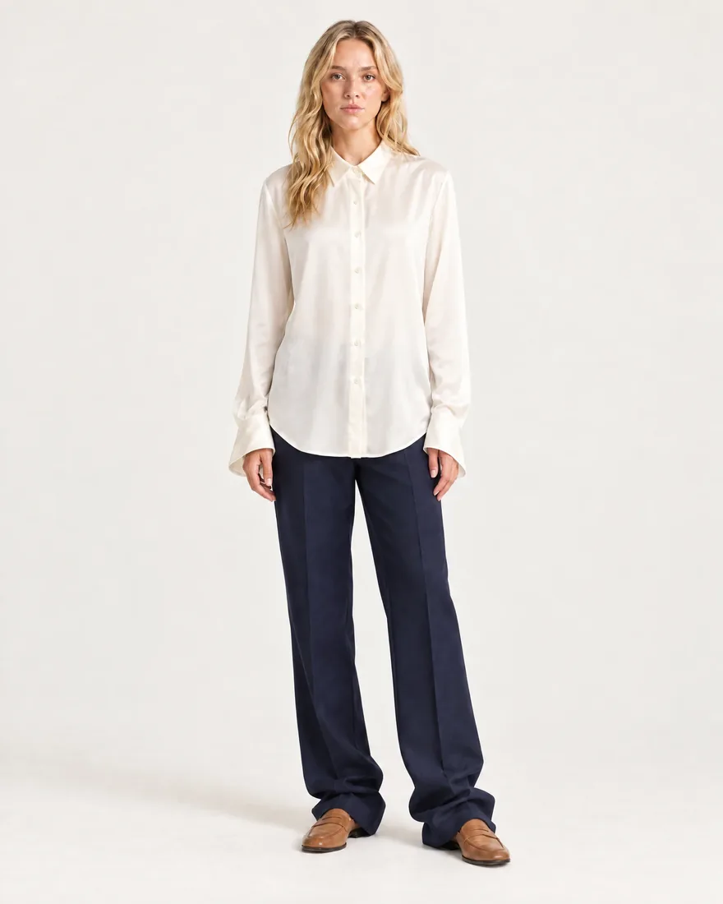
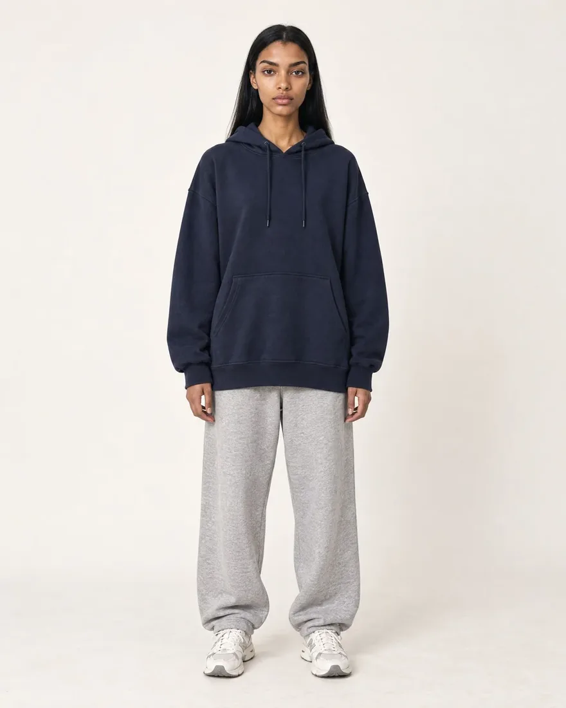

Read as more competent
People in clothes that looked more expensive were rated more competent, in judgments formed in well under a second.
Oh, D., Shafir, E., & Todorov, A. (2020). Nature Human Behaviour.A personalized style read and a wardrobe plan built on your proportions, your coloring, and the week you actually live. Every plan is reviewed by a human stylist.

Same woman, same body, same budget. The only thing that changed is proportion, color, and fit. That's the whole job of a stylist, and it's the part most closets are missing.



People in clothes that looked more expensive were rated more competent, in judgments formed in well under a second.
Oh, D., Shafir, E., & Todorov, A. (2020). Nature Human Behaviour.A small tailoring change, made-to-measure versus off the rack, shifted how confident, successful, and well paid the wearer looked.
Howlett, N., Pine, K., Orakçıoğlu, I., & Fletcher, B. (2013). Journal of Fashion Marketing and Management.Participants dressed formally won more concessions in a mock negotiation than those dressed down.
Kraus, M. W., & Mendes, W. B. (2014). Journal of Experimental Psychology: General.Wearing more formal clothing was linked to more abstract, big-picture thinking across several experiments.
Slepian, M. L., Ferber, S. N., Gold, J. M., & Rutchick, A. M. (2015). Social Psychological and Personality Science.What you wear changes how you perform. In the original study, putting on a coat framed as a doctor's coat improved sustained attention.
Adam, H., & Galinsky, A. D. (2012). Journal of Experimental Social Psychology.Employees reported feeling more authoritative, trustworthy, and competent when dressed in more formal attire.
Peluchette, J. V., & Karl, K. (2007). Human Resource Development Quarterly.Women in more structured, tailored outfits received more favorable hiring recommendations in a mock interview study.
Forsythe, S. M. (1990). Journal of Applied Social Psychology.Students dressed more formally were rated as more intelligent and expected to do better in school.
Behling, D. U., & Williams, E. A. (1991). Clothing and Textiles Research Journal.Physicians in professional attire earned noticeably more patient trust and confidence than those dressed casually.
Rehman, S. U., Nietert, P. J., Cope, D. W., & Coleman, A. O. (2005). The American Journal of Medicine.Women wearing red were rated as more attractive by men across a series of experiments, without the raters noticing why.
Elliot, A. J., & Niesta, D. (2008). Journal of Personality and Social Psychology.Servers wearing red earned larger tips from male customers than servers in other colors.
Guéguen, N., & Jacob, C. (2014). Journal of Hospitality & Tourism Research.The clothes people were wearing shaped how they described themselves moments later.
Hannover, B., & Kühnen, U. (2002). Journal of Applied Social Psychology.Summaries are paraphrased. Full citations available on request.
The industry runs on hauls: buy more, return more, wear less. Most closets are full and most mornings still start with nothing to wear.
"Most women don't need more clothes. They need the three pieces that make the rest of the closet work."
Marisol Vance, Lead Stylist at NociNo two bodies dress the same. We read 40+ markers across proportion, coloring, fit, and lifestyle to understand what will actually work on you, and why.

Where your waist actually sits, your vertical balance, and the scale of your frame.
Undertone, the contrast between your hair, skin, and eyes, and the neutrals that flatter you.
Office days, school runs, dinners, travel, workouts. The plan dresses the life you have.
What you wear on repeat, what you never touch, and the gaps between them.
How much attention you want, the fabrics you'll actually wear, and the pieces you'll never give up.
Where you stand on proportion, color harmony, fit precision, and versatility, and how far each can move.
Why a rise, a hem, or a neckline reads the way it does on your body.
How proportion, color, and texture work together, and why some combinations always look expensive.
The few changes, mostly from your own closet, that move the whole look.
Plain-language explanations for each recommendation, so you can keep making good calls without us.
Understand your body and your closet, then act on it with a wardrobe plan built around your proportions and your week.
We pair a human stylist with the Noci fit engine to give you a plan that starts with what you already own. Clear recommendations, tailored to your body, your goals, and your budget.

A sequenced wardrobe plan with the exact steps, in the order that compounds, starting with the pieces you already own.
Your plan draws on 300+ proportion, color, and fit principles a working stylist uses, applied to your body and your closet.
WearingStyledSmall, cheap changes to what you already own that remove the biggest proportion problems first.
Rebalance the torso-to-leg line with one anchor piece cut to your rise and inseam.
Move black away from the face and bring espresso and ivory in. Your contrast does the rest.
Six pieces that make eighteen outfits across work, weekend, and one event.
Ever wondered what you'd look like dressed by someone who really knows your body? Preview each change before you buy a thing.
Previews are built on your proportions, so the drape and the waistline land where they will on you.
Every change shown is possible with tailoring, restyling, or one made-to-order piece.
Built for the diversity of real bodies. No one-size rules, no "dress for your shape" clichés.
See how a rise, a hem, or a color reads on you before it's in your cart.
"Noci cuts through the noise. It's what a good stylist does, without the day rate."
Daniela Cruz, Fit & Proportion LeadTrack how each swap, piece, or tailoring visit moves your scores, and see what your closet looks like a year from now.
Every read and plan is reviewed by a working stylist with taste, not a filter.
Recommendations start with what you own. Buying is the last resort, not the first.
Every recommendation is tied to your proportions, coloring, and week.
Noci pieces are cut when you order, to your rise and inseam, with no sitting inventory.
The following assessments are included in your Noci style read.
Understand your body and your coloring, and how they shape everything you put on.
Discover the feature that leads every outfit, and how to dress so it does the talking.
See how a rise, a hem, and a neckline work together to shift balance and line.
Find out which changes move your scores the most, and which ones you can skip.
"The read told me why my closet felt off. Two swaps and I look like I tried."
"Far more specific than I expected from three photos. It told me what not to buy, which I've never gotten from a brand."
"It calmed the annoying voice that says nothing looks good on me. Turns out the rise was wrong, not my body."
"The read told me why my closet felt off. Two swaps and I look like I tried."
"Far more specific than I expected from three photos. It told me what not to buy, which I've never gotten from a brand."
"It calmed the annoying voice that says nothing looks good on me. Turns out the rise was wrong, not my body."
Every read and every plan is reviewed by a working stylist. The best-kept secret in Hollywood isn't a filter, it's the person who dresses them.
12 years styling, editorial and private clients

Fit and proportion. Trained as a tailor

Color and contrast. 8 years on set

Tailoring and capsule wardrobes

Occasion and event dressing

Petite and extended sizing
A stylist's eye and a fit engine, working on the same three photos. No guesswork, no "dress for your shape" cliché, just a plan that fits the body in the picture.
We map 32 proportion landmarks from your photos, the same points a tailor measures, so every recommendation starts from your actual lines.
We consider your calendar, climate, budget, and closet. No two plans are alike, because no two weeks are.
Your read runs across 41 assessments grouped by the principles a stylist actually uses.
Every read is checked by a Noci stylist for quality, taste, and clarity before it reaches you. The stylist is a person, and you can text her.
Every transformation below was done with tailoring, restyling, and at most one made-to-order piece.
WearingStyledStyledWearingStyledStyledWearingStyledWearingStyledGet your personalized style read and wardrobe plan, built on your body and your week.
Start my style readNoci showed me what to fix and backed it up with my own measurements. I really appreciated that.
Moira K. · Los AngelesThe plan started with my closet. I bought one pair of trousers and everything else suddenly worked.
Damaris · ChicagoFor a free read, this is absurdly detailed. I'm following the color notes first.
Marisol S. · PortlandI was skeptical, then I read the fit section. Nobody had ever told me my rise was the problem.
Ala O. · MiamiVery clear. Very specific. Fast. My stylist texted me back the same day.
Sarah B. · DenverEvery swap they suggested is working. I get dressed in five minutes now.
Akshaya · SeattleI liked how much of the plan came from things I already owned.
Diana E. · AtlantaThe read made me feel better about my body, not worse. That surprised me.
D. Nguyen · BostonNoci showed me what to fix and backed it up with my own measurements. I really appreciated that.
Moira K. · Los AngelesThe plan started with my closet. I bought one pair of trousers and everything else suddenly worked.
Damaris · ChicagoFor a free read, this is absurdly detailed. I'm following the color notes first.
Marisol S. · PortlandI was skeptical, then I read the fit section. Nobody had ever told me my rise was the problem.
Ala O. · MiamiVery clear. Very specific. Fast. My stylist texted me back the same day.
Sarah B. · DenverEvery swap they suggested is working. I get dressed in five minutes now.
Akshaya · SeattleI liked how much of the plan came from things I already owned.
Diana E. · AtlantaThe read made me feel better about my body, not worse. That surprised me.
D. Nguyen · BostonGet your personalized style read from your phone in three simple steps.
Answer a few questions about your week and your closet, then upload three photos: front, side, and the outfit you feel best in.

FrontSideBest outfitWe read 41 markers, including vertical balance, contrast, rise, hem length, closet skew, and more.
You'll get a plan naming your strengths, the swaps with the most leverage, and the few pieces worth adding.
One style read per season. No subscription, no card required. We make money when you love a Noci piece enough to order it.
An in-depth breakdown of your proportions, coloring, and fit.
A sequenced plan of swaps, tailoring, and the few pieces worth adding.
Your current scores, and how each change moves them over time.
See what each change looks like on your body before you buy.
A real person, on your phone, for the "what do I wear to this" moments.
Free with your style read. No hidden fees, nothing to cancel.
We stay with you through every step. Your stylist is a text away for the "I have a wedding Saturday and nothing to wear" moments.
Direct access to your stylist, in your messages, for any question or last-minute decision.
A letter from your stylist with your plan, what she noticed, and why each pick works on you.
Redo your read each season and see, in numbers, how your closet and your scores have moved.
"We're building the styling layer every closet should have had all along. Human taste, on every plan, for free."
Annika Roth, Head of Styling at NociAnything else, text your stylist or write to hello@shopnoci.com.
A free, personal styling service. You get a style read of your proportions, coloring, fit, and closet, then a wardrobe plan reviewed by a human stylist, all from your phone.
Any woman who wants to look put together without buying more. It works whether your closet has 40 pieces or 400.
You'll get a refreshed read each season so the plan keeps up with your life.
You can, and you'll get general advice. General is all a chatbot can offer. It can't measure your rise from a photo, read your contrast level, or see what's in your closet, so its answers are the same ones it gives everyone.
Noci's read starts from your photos and your closet, and a working stylist reviews every plan. That's the difference between "high-rise trousers are flattering" and "your rise is 11.5 in, here's the one cut to it".
About eight minutes to complete on your phone. Your read and plan arrive within 48 hours.
Three: a front view, a side view, and you in the outfit you feel best in. Fitted, plain clothes in natural light give the most accurate read.
No. Every step in your plan has a closet option. Where a new piece would make the biggest difference, we'll show the Noci version, cut to your measurements, and you decide.
Ongoing. You get a fresh read each season, and your stylist stays a text away in between.
Because the plan is how you discover whether a Noci piece belongs in your closet. We'd rather earn the order than charge for the advice.
They're used for your read and seen only by your stylist. They're never used in marketing without your written permission.
The read isn't a critique of your body. It's a map of how clothes sit on it. Most women leave with fewer complaints about their body and more about their trousers.
Most of the dread about getting dressed comes from guessing. When you don't know why something looks off, everything feels like your fault. A read replaces the guessing with a reason.
Features you've been dressing around often turn out to be your strongest lines. Most reads end with a woman appreciating something she used to hide.
Your body isn't the problem to solve. A gaping waistband or a hem that shortens your leg line is, and both take one visit to fix.
Once you know your rise, your contrast, and your line, you can walk into any store and make the call without us.
Plenty of women feel guilty about wanting to look good, as if it means they're shallow. But getting dressed is something you do every day whether you care or not. Caring just means doing it well.